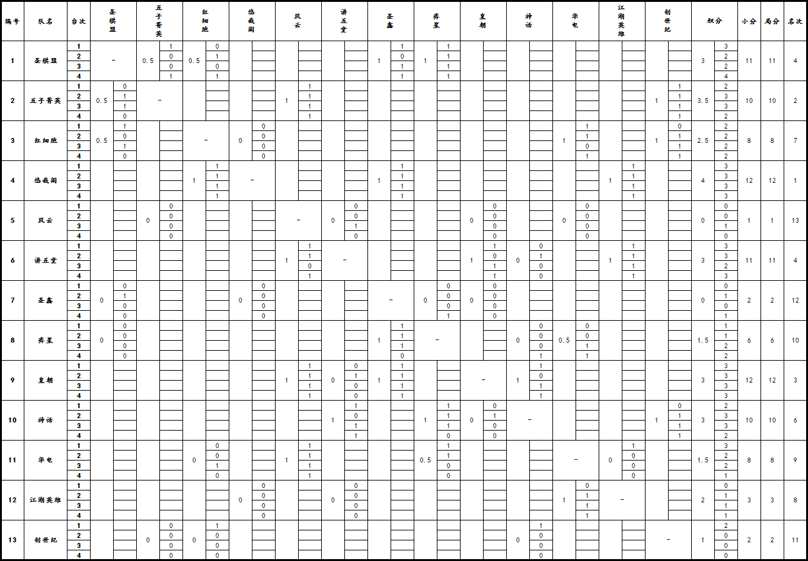

2013暑假杯家族赛第四轮积分榜
#1 2013暑假杯家族赛第四轮积分榜 作者：一夜晴 发表时间：2013-8-12 9:39:24
排名方法： ①采用积分制：胜1分,和棋各0.5分,输0分； ②大分相同者,比较小分；小分相同再比较局分；
大分计算方法：团队每轮得分之和 小分计算方法为：全队队员得分之和 局分计算方法为：全队队员胜局数。 ——解释权归大赛组委会所有
暑假杯五子棋家族争霸赛轶序册/ziyou/HTML/4151.html
星火道场初级群：169143174 |
||||||||||||||||||||||||||||||||||||||||||||||||||||||||||||||||||||||||||||||||||||||||||||||||||||||||||||||||||||||||||||||||||||||||||||||||||||||||||||||||||||||||||||||||||||||
#2 Re:2013暑假杯家族赛第四轮积分榜 作者：屏蔽 发表时间：2013-8-12 19:51:22

专业的又来了！